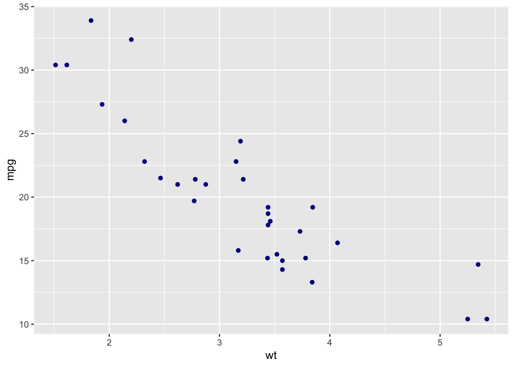
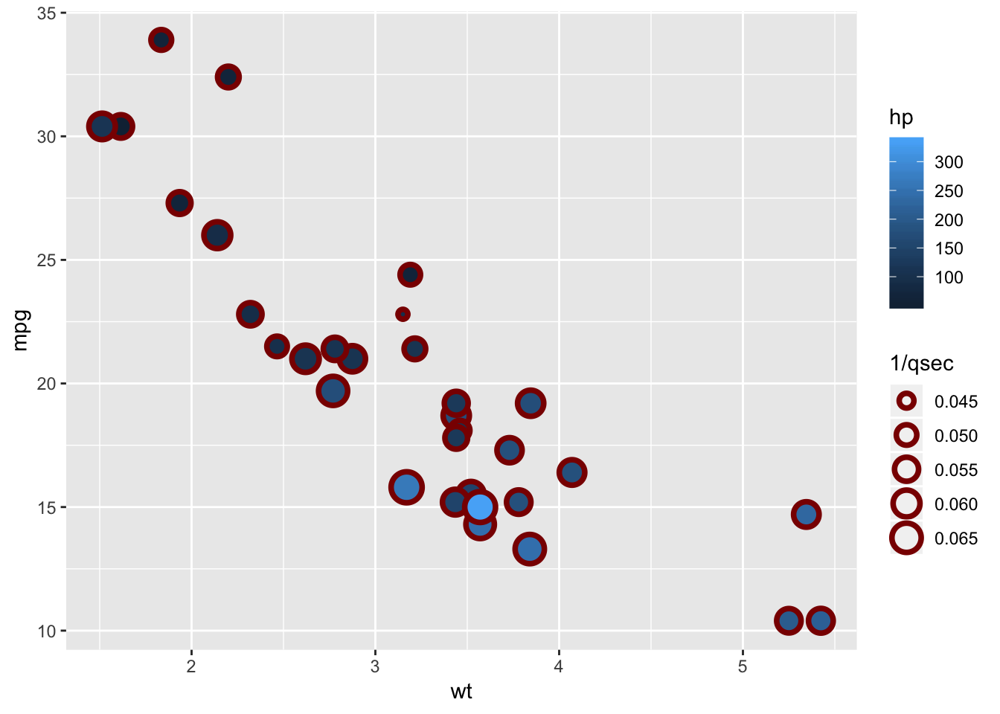
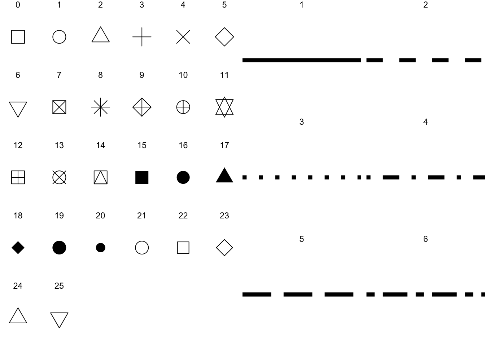
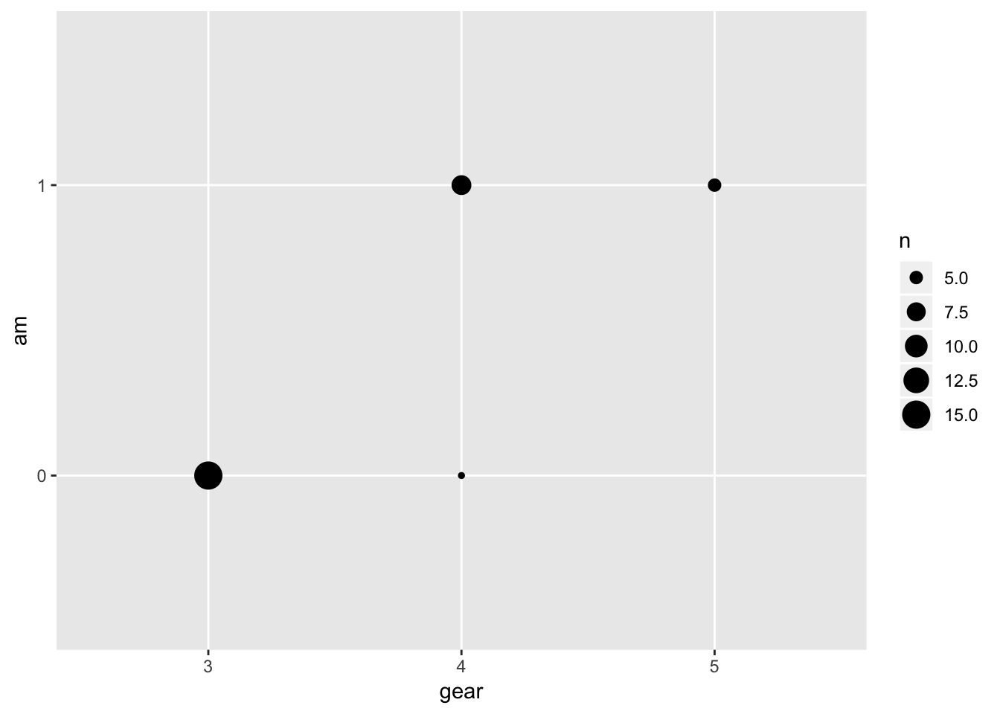
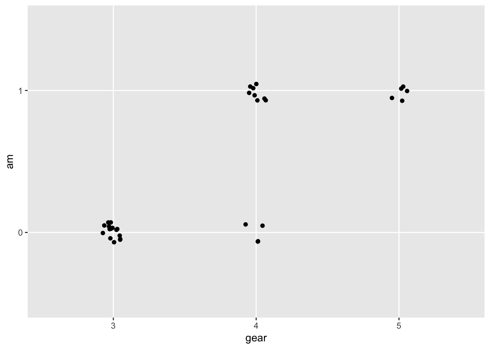
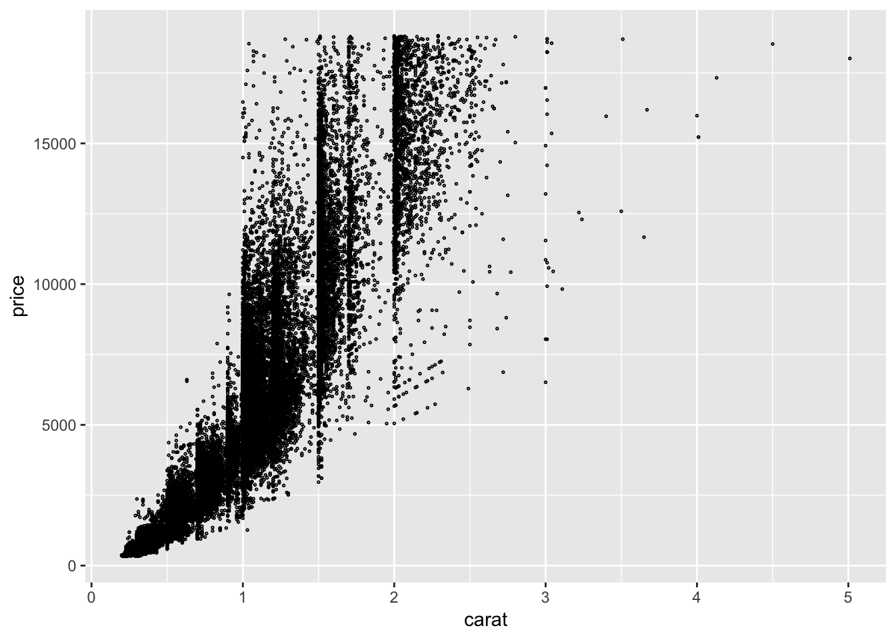
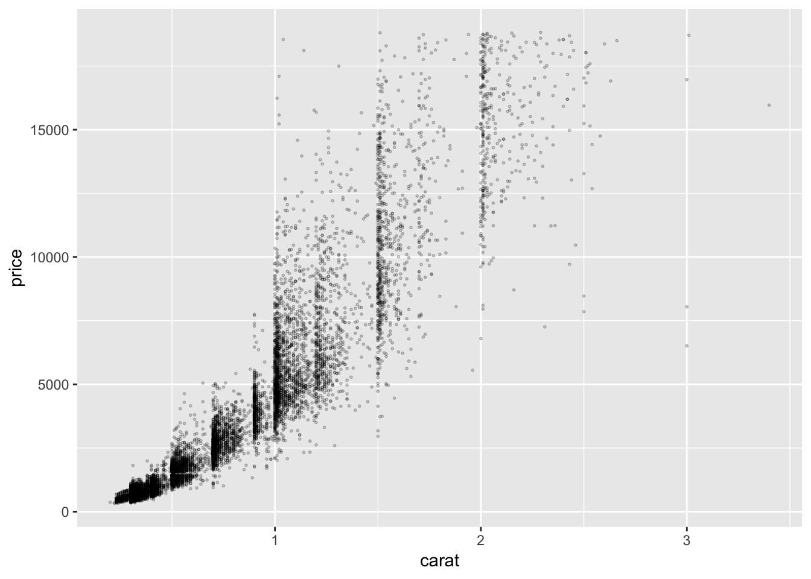

Chapter 3 Association–scatterplots
3.1 Basic elements of the grammar of graphics
| ggplot element | Description |
|---|---|
| Data | ggplot uses a dataframe as input (e.g., data = mtcars.data) |
| Geoms | geometric element (e.g., geom_point, geom_bar) |
| Mapping | links data variables to aesthetic dimensions (aes) (e.g., aes(x = cyl, y = mpg)) |
| Setting | specifies value of aesthetic dimension directly (e.g., colour = “blue”) |
| Layers | add components to base plot, most often geoms (additional layers added with “+”) |
| Stats | statistical summary, such as density or count; each geom has a default statistic |
| Position | adjusts the location of the plotted geom |
| Annotations | text and graphical overlays |
| Coordinate system | Cartesian, polar or small multiple facets |
| Themes | sets of plot parameters (e.g., font, background) |
3.2 Simple scatterplot
The simplest plot must include data, aesthetic mapping, and geom a geometric element. The data must be organized with each observation as a row and each variable as a column. For a scatterplot the geometric element is a point, and the aesthetic mapping links variables to properties of the geometric element. For a scatterplot this would be the x and y position of the point. the the point the x and y position must be specified, but other properties, such as color, size, alpha level, and shape, can be mapped to variables. These properties of the geometric element can also be set to specific values, such as specifying the color of the point.
Figure ?? shows the ggplot2 code and associated scatterplot. The equation used to specify the plot implicitly specifies the values by their position, such as data being identifed as following “ggplot(”. The following speciifcations are equivalent:
`` ggplot(data = mtcars.df, mapping = aes(x = wt, y = mpg)) + geom_point(colour = “darkblue”)
ggplot(mtcars.df, aes(wt, mpg)) + geom_point(colour = “darkblue”) ``
library(tidyverse)
mtcars.df = mtcars
ggplot(data = mtcars.df, mapping = aes(x = wt, y = mpg)) +
geom_point(colour = "darkblue")
A powerful feature of ggplot2 is the abilty to add layers of geometric elements to a plot. Each layer can have its own data, mapping of aesthetic properties, and setting of aesthetic properties. The data and mapping specified in the base plot statement–“ggplot(data = mtcars.df, mapping = aes(x = wt, y = mpg))”–are global and apply to all layers, but can overridden by the any mappings specific to a layer. Figure ?? shows a layer of red circles based on a subset of the data.
fourcyl.mtcars.df = mtcars.df %>% filter(cyl==4)
ggplot(data = mtcars.df, mapping = aes(x = wt, y = mpg)) +
geom_point(colour = "darkblue") +
geom_point(data = fourcyl.mtcars.df, colour = "red", shape = 21, size = 4)3.3 Scatterplot with additional mappings
The scatterplot typically maps variables to the x and y position of the points, but ggplot allows for other mappings. Figure ?? shows mapping variables to the fill and size of the points. The shape, stroke, and color of the points are set to values they could also be mapped, which could quickly overload the graph. Note that only shapes 21-25 in Figure ?? can include fill and stroke, with the other symbols color determines the color of the whole symbol not just the border.
ggplot(data = mtcars, mapping = aes(x = wt, y = mpg, fill = hp, size = 1/qsec)) +
geom_point(shape = 21, colour = "darkred", stroke = 2.) 

library(RColorBrewer)
# display.brewer.all(type="qual")
#
# display.brewer.all(type="div")
display.brewer.all(n=NULL, type="all", select=NULL, exact.n=TRUE,
colorblindFriendly=FALSE)
3.4 Scatterplot with linear and loess fit
The layers can include geometric elements beyond geom_point. Perhapts the most useful geoms to add to a scatterplot is a curve fit. Figure ?? shows a simple scatterplot with two cruve fits. The loess fit shows a smooth fit that indicates non-linar trends, and the blue line shows a linear regeression. The loess line highligths areas in the data that deviate from a linear relationship shown by the blue line. All three layers inherit the same x and y mapping from the ggplot base layer.
When building a plot each layer is placed on top of the preceding layer, such that the last layer lies on top of all the others. With Figure ??, the points are on the bottom and the light blue line is on top of the gray loess line.
Table ?? shows the full set of possible geometric elements that can be used to create graphs, the following chapters describe many of these.
Note the smooth fit geoms include additional settings for the method and whether the line should include a standard error.
ggplot(data = mtcars.df, aes(x = wt, y = mpg)) +
geom_point(colour = "darkblue") +
geom_smooth(method = "loess", se = FALSE, colour = "darkgrey") +
geom_smooth(method = "lm", fill = "lightblue")| x |
|---|
| geom_abline |
| geom_area |
| geom_bar |
| geom_bin2d |
| geom_blank |
| geom_boxplot |
| geom_col |
| geom_contour |
| geom_count |
| geom_crossbar |
| geom_curve |
| geom_density |
| geom_density_2d |
| geom_density2d |
| geom_dotplot |
| geom_errorbar |
| geom_errorbarh |
| geom_freqpoly |
| geom_hex |
| geom_histogram |
| geom_hline |
| geom_jitter |
| geom_label |
| geom_line |
| geom_linerange |
| geom_map |
| geom_path |
| geom_point |
| geom_pointrange |
| geom_polygon |
| geom_qq |
| geom_quantile |
| geom_raster |
| geom_rect |
| geom_ribbon |
| geom_rug |
| geom_segment |
| geom_smooth |
| geom_spoke |
| geom_step |
| geom_text |
| geom_tile |
| geom_violin |
| geom_vline |
3.5 Global and local regression
ggplot(data = mtcars.df, aes(x = wt, y = mpg)) +
geom_smooth(method = lm, colour = "darkgrey", size = .5) +
geom_point(aes(colour = as.factor(cyl))) +
geom_smooth(aes(colour = as.factor(cyl)), method = lm, se = FALSE)3.6 Quantile regression and other functional relationships
Often the question the graph is meant to answer is not about the central tendency, but about the likelihood of relatively extreme values, such as the 25th and 75th percentiles.
ggplot(data = mtcars.df, aes(x = wt, y = mpg)) +
geom_smooth(method = lm, colour = "darkgrey", size = .5) +
geom_point() +
geom_quantile(quantiles = c(.25, .75))## Loading required package: SparseM##
## Attaching package: 'SparseM'## The following object is masked from 'package:base':
##
## backsolve## Smoothing formula not specified. Using: y ~ x3.7 Scatterplot with regression equation and marginal distributions
Scatterplot augmented with marginal distributions, regression equation, and Tufte-inspired range frame.
Marginal distributions show that a 1-D scatterplot is a histogram and that a 2-d histogram is a scatterplot. Chapter 4 describes such plots in detail.
Chapter 10 shows how to add annotations, such as the equation.
Derived from: http://t-redactyl.io/blog/2016/05/creating-plots-in-r-using-ggplot2-part-11-linear-regression-plots.html
library(ggthemes)
library(ggExtra) # For marginal histograms## Warning: package 'ggExtra' was built under R version
## 3.4.4equation = function(x) {
lm_coef <- list(a = round(coef(x)[1], digits = 2),
b = round(coef(x)[2], digits = 2),
r2 = round(summary(x)$r.squared, digits = 2));
lm_eq <- substitute(italic(y) == a + b %.% italic(x)*","~~italic(R)^2~"="~r2,lm_coef)
as.character(as.expression(lm_eq));
}
mtcars.df = mtcars
fit = lm(mpg~wt, data = mtcars.df)
p = ggplot(mtcars.df, aes(x=wt, y=mpg)) +
geom_point(colour = "darkblue") +
geom_smooth(method=lm, se=FALSE) +
annotate("text", x = 4, y = 30, label = equation(fit), parse = TRUE) +
geom_rangeframe() + # Requires ggthemes
theme_minimal()
p = ggMarginal(p, type = "histogram")
p3.8 Categorical scatterplot
mtcars.df = mtcars
mtcars.df$gear = as.factor(mtcars.df$gear)
mtcars.df$am = as.factor(mtcars.df$am)
ggplot(mtcars.df, aes(gear, am)) +
geom_count()
ggplot(mtcars.df, aes(gear, am)) +
geom_jitter(width = 0.075, height = 0.075) 
s.mtcars.df = mtcars.df %>% group_by(gear, am) %>% summarise(count = n())
ggplot(s.mtcars.df, aes(gear, am)) +
geom_tile(aes(fill = count))3.9 Table lens
Table lens serves a similar purpose to the scatterplot but might be more familiar and focusses attention on individual variables and individual cases. Chapter 9 provides more detail on this technique.
3.10 Scatterplot with overplotting mitigation
diamonds.df = diamonds
ggplot(diamonds.df, aes(carat, price)) +
geom_point()
ggplot(diamonds.df, aes(carat, price)) +
geom_point(size = .1)ggplot(diamonds.df, aes(carat, price)) +
geom_point(size = .3, shape = 21)
ggplot(diamonds.df, aes(carat, price)) +
geom_point(size = .3, shape = 21, alpha = .3)
ggplot(diamonds.df %>% sample_n(10000), aes(carat, price)) +
geom_point(size = .3, shape = 21, alpha = .3)
ggplot(diamonds.df, aes(log(carat), log(price))) +
geom_point(size = .3, shape = 21, alpha = .3)ggplot(diamonds.df, aes(log(carat), log(price))) +
geom_count(show.legend=F, alpha =.3, shape =21)ggplot(data = mtcars.df, aes( x = disp, y = hp)) +
geom_point(colour = "grey40", shape = 21)+
geom_smooth(method = loess, colour = "grey40")+
geom_smooth(method = lm, se = FALSE, size = .75) +
geom_smooth(aes(colour = factor(cyl)),
method = lm, se = FALSE, size = 1.5)3.11 A matrix of scatterplots
## [1] "mpg" "cyl" "disp" "hp" "drat" "wt" "qsec"
## [8] "vs" "am" "gear" "carb"